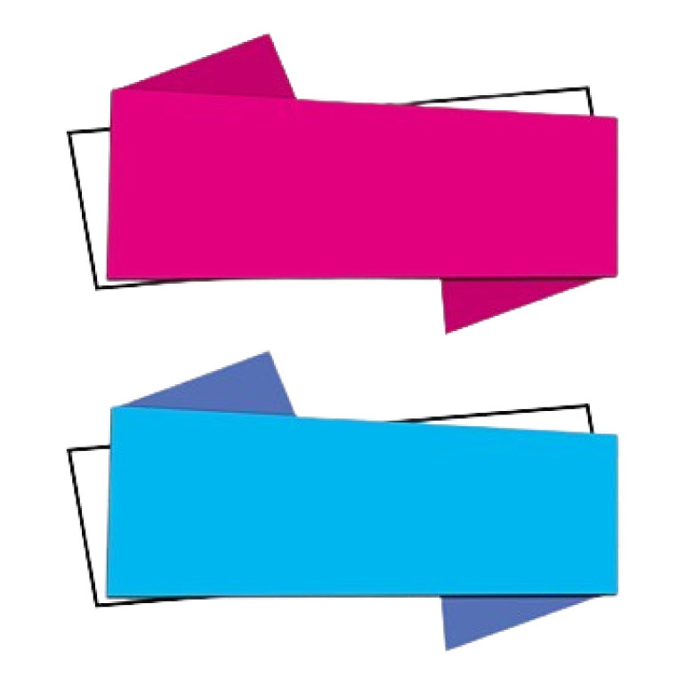

Previous
Benefits of the Platform

5. Creates Lasting Social Impact ❤️
⇒
The platform supports various causes like education, healthcare, and
environmental protection, helping people in need through creative
efforts.
7. Encourages Healthy Competition & Motivation 🏆
⇒
Challenges push people to do their best, making the experience rewarding
and impactful.
8. Accessible to Everyone 🌏
⇒
Since tasks can be done online or offline, anyone from anywhere can
participate and make a difference.